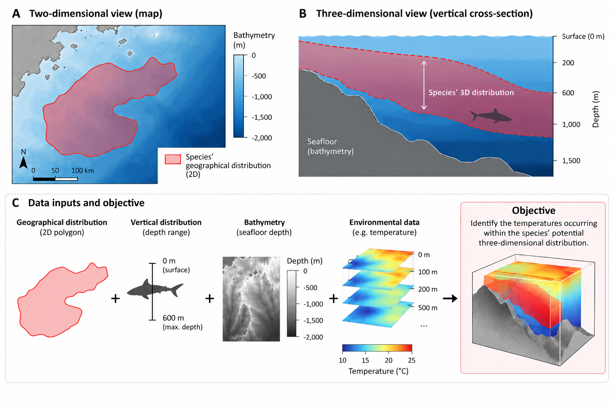
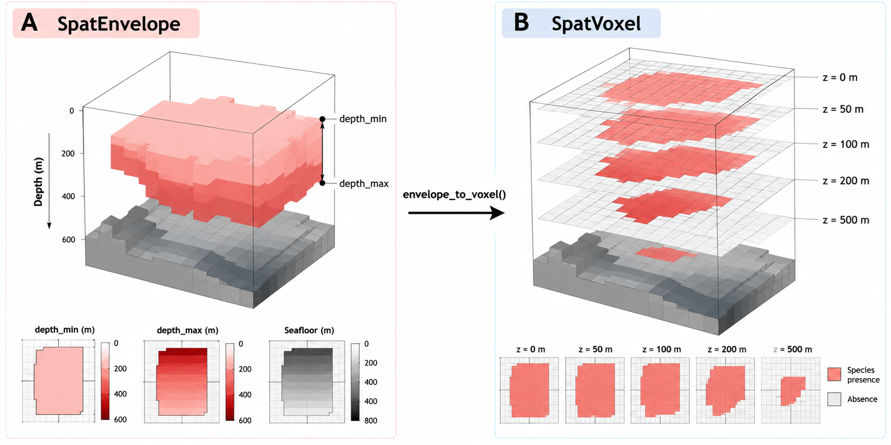
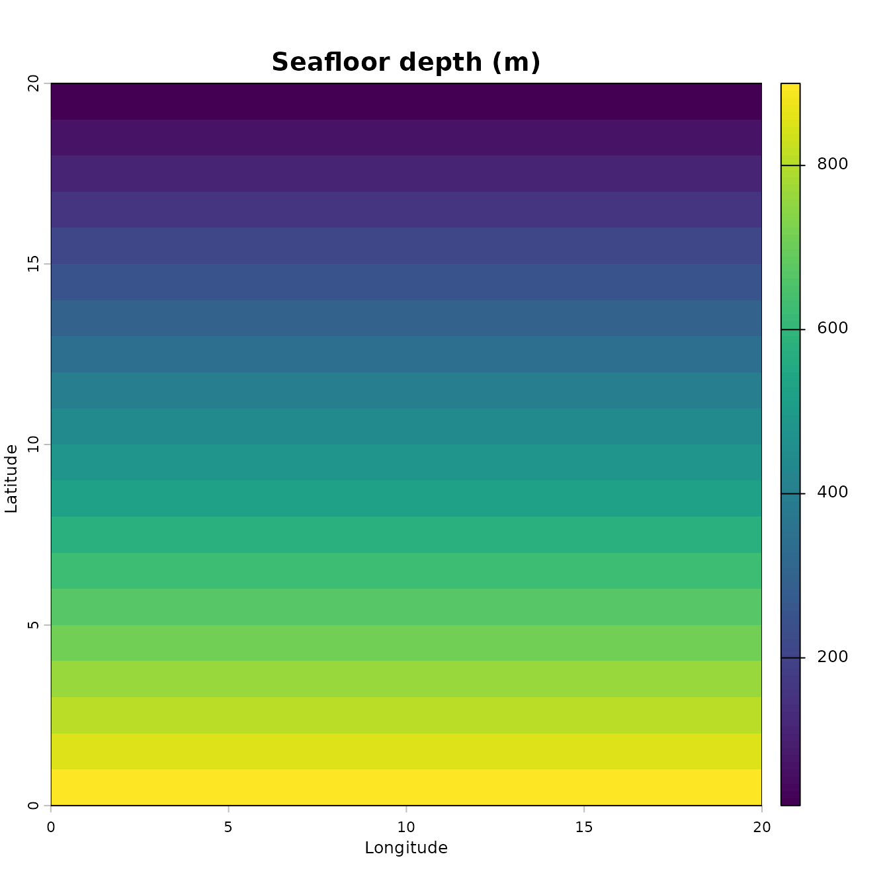
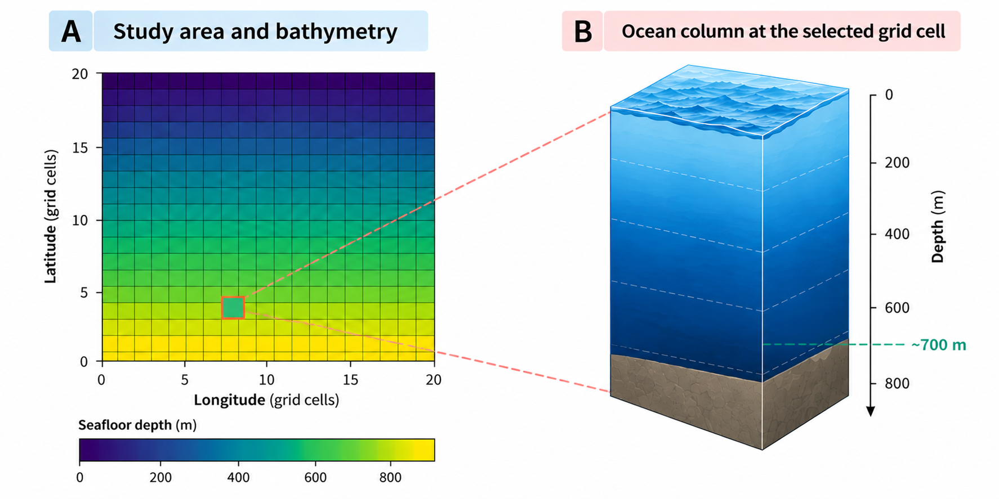
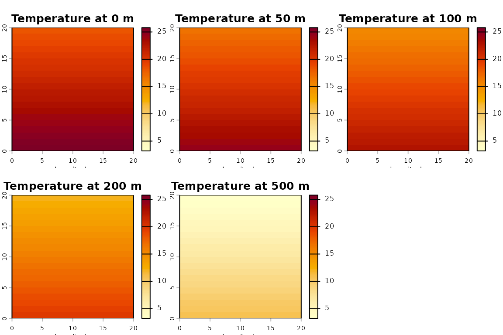
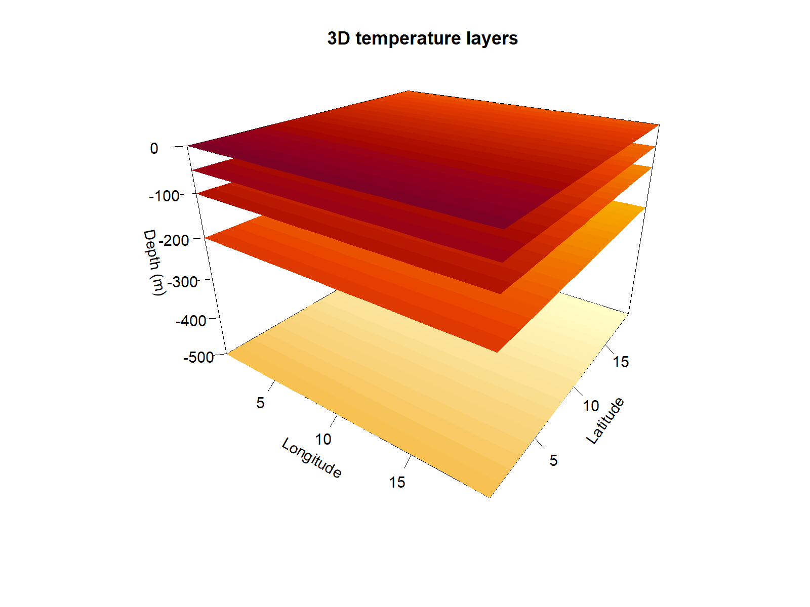
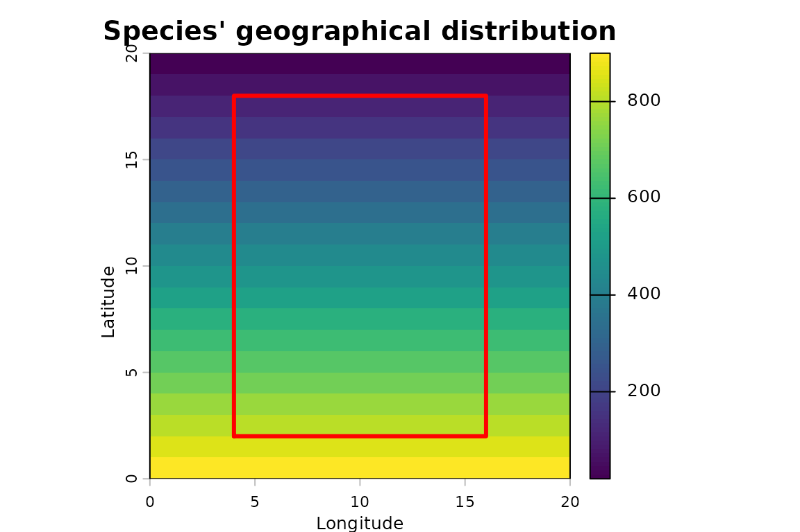
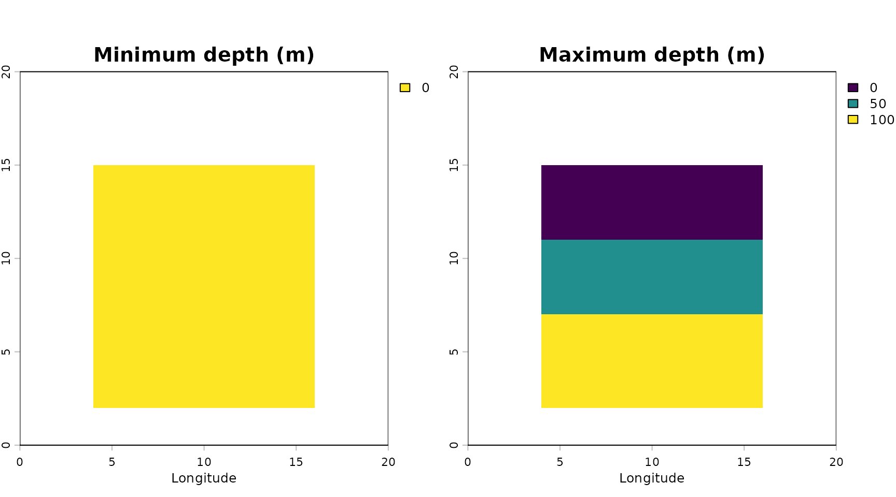
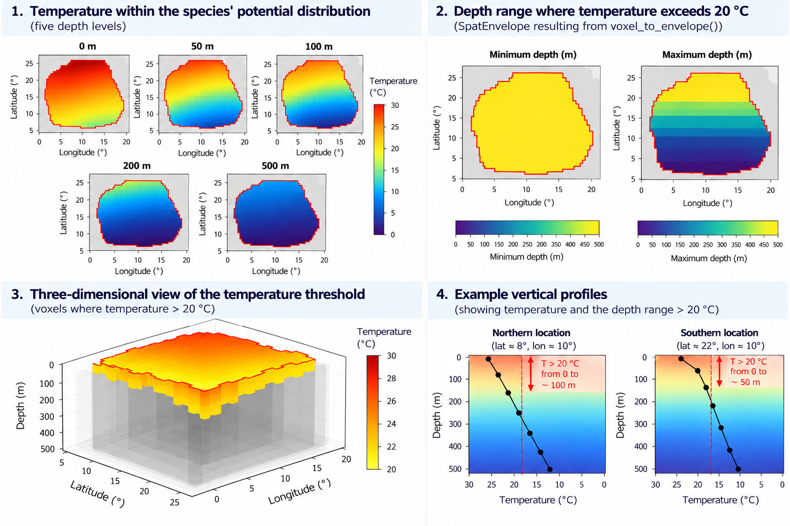

Marine species inhabit a three-dimensional environment. However, their geographical distributions are often represented using two-dimensional maps, which show where a species occurs without considering the depths it occupies.
This distinction matters. Two species may share the same geographical distribution but occupy entirely different depths. Similarly, environmental conditions such as temperature can change considerably throughout the water column.
How can we incorporate depth into our spatial analyses to better understand the environmental conditions experienced by marine species?
ocean3d is an R package designed to incorporate the
vertical dimension into marine spatial analyses. It provides tools to
represent species distributions, fisheries and environmental variables
in three dimensions, allowing us to investigate their spatial
relationships, identify overlaps and extract or summarise information
across different depths.
Rather than treating the ocean as a two-dimensional surface,
ocean3d allows us to account for how marine habitats and
environmental conditions vary throughout the water column.
In this tutorial, we will explore how ocean3d helps us
answer this question by exploring some of the package’s core
functionalities through a simple, reproducible example.
Our research question
Imagine we are studying a marine species for which we know:
- Its geographical distribution, represented by a polygon.
- Its vertical distribution (e.g., extending from the surface to a maximum depth of 600 metres).
- The bathymetry of our study area.
Additionally, we know the environmental conditions of such three-dimensional space, for example:
- Ocean temperature at several depths throughout the water column.
Using ocean3d, we will combine the species’ geographical
distribution, depth range and bathymetry to represent its potential
three-dimensional distribution. We will then integrate environmental
data to identify and summarise the temperatures occurring within this
space.
To keep things simple, we will use small, artificially generated datasets. This allows us to focus on understanding the workflow without downloading external data.

Figure 1. Conceptual overview of the tutorial. A species’ geographical distribution and depth range are combined with bathymetry to represent its potential three-dimensional distribution. Environmental data are then used to characterise the conditions within this space.
How does ocean3d represent three-dimensional
space?
To combine species distributions with environmental information, we need a way to represent both datasets in three dimensions.
ocean3d uses two main spatial representations:
SpatEnveloperepresents a three-dimensional distribution using two raster layers:depth_minanddepth_max. Each geographical cell contains the minimum and maximum depths defining its vertical interval. Consequently, the vertical extent can vary between geographical locations.SpatVoxelrepresents three-dimensional information using a stack of raster layers, each corresponding to a specific depth. Its layers follow the naming convention{variable}_depth={value}, allowing environmental conditions or other spatial information to be represented at different depths.
The key difference is how depth is represented. In a
SpatEnvelope, depth is stored as the cell value, defining a
vertical interval. In a SpatVoxel, depth identifies the
raster layer, representing information at a particular depth level.
| Object | What it is |
|---|---|
SpatEnvelope |
The species’ 3D range. Two layers, depth_min and
depth_max; depth is the cell value, so the
vertical interval varies per cell. |
SpatVoxel |
The environmental raster. One layer per standard depth, named
{variable}_depth={value}; depth is the layer
index. |
Figure 2 illustrates how the same species’ three-dimensional
distribution can be represented using either a SpatEnvelope
or a SpatVoxel. The envelope_to_voxel()
function from ocean3d will enable us to convert and
SpatEnvelope into a SpatVoxel, distributing
the species’ potential presence across a set of predefined depth levels.
Each level represents an interval of water rather than an infinitely
thin horizontal plane. Consequently, the geographical area occupied by
the species may differ between depth levels.

Figure 2. Comparison of the two three-dimensional spatial representations used byocean3d.
(A) A SpatEnvelope defines a species’ potential
distribution using minimum and maximum depths, constrained by the local
bathymetry. (B) The same distribution is converted into a
SpatVoxel, representing potential species presence at five
predefined depth levels (0, 50, 100, 200 and 500 m) using
envelope_to_voxel(). The illustration is conceptual and
based on the synthetic example presented in this tutorial.
A SpatEnvelope is particularly useful when we know the
geographical distribution and vertical limits of a species, but do not
have detailed information about how it is distributed throughout the
water column. For example, we may have an IUCN distribution polygon and
the species’ minimum and maximum recorded depths. Combining these with
bathymetry allows us to represent its potential three-dimensional
distribution without assuming that we know its precise distribution at
each depth.
A SpatVoxel, on the other hand, is useful when we need
to represent or analyse information at specific depth levels. For
example, oceanographic datasets often provide temperature or dissolved
oxygen measurements at several standard depths. This representation also
allows us to examine species distributions or fishing activity at
different depths, including situations where occupancy or intensity
varies throughout the water column.
The two representations are complementary. We can
use a SpatEnvelope to define a species’ potential
three-dimensional distribution and convert it into a
SpatVoxel to compare it with environmental datasets
organised into depth layers.
In this tutorial, we will create both representations, convert between them and use them together to identify the temperatures occurring within our species’ potential three-dimensional distribution.
Don’t worry if these concepts are not immediately clear. We will build each object step by step and explore its structure as we progress through the tutorial.
Getting started: preparing our data
Now that we have defined our research question, let’s start building the datasets we need to answer it.
As illustrated in Figure 1, our analysis requires four main inputs:
- A study area, defining the geographical extent of our analysis.
- Bathymetry, describing the depth of the seafloor across our study area.
- A species’ geographical distribution and depth range, which together define its potential three-dimensional distribution.
- Environmental data, in our case ocean temperature at different depths.
Throughout this tutorial, we will use small, artificially generated
datasets that represent these inputs. This allows us to explore the main
functionalities of ocean3d without downloading external
datasets or requiring API credentials.
For real-world applications, ocean3d provides several
functions to facilitate data acquisition and preparation. These include
load_gebco_bathymetry() for bathymetric data from GEBCO,
woa_download() and woa_load_nc() for
environmental data from the World Ocean Atlas, and
fetch_species_assessments() for retrieving species
information, including depth limits, from the IUCN Red List API.
Species distribution polygons can be obtained separately, for
example, from the IUCN Red List spatial datasets. These can then be
combined with species-specific depth limits and bathymetry using
vect_to_envelope() to create three-dimensional species
distributions.
Support for downloading Copernicus data through
copernicus_load() is also under development. Stay
tuned!
We will introduce these data sources and their corresponding functions as we progress through the tutorial.
If you would like to explore complete analyses using real datasets, see the additional articles at the end of this tutorial.
Installing ocean3d
ocean3d is currently available from GitHub. You can
install the latest development version using:
# install.packages("remotes")
remotes::install_github("Marine-Biodiversity-Conservation-Lab/ocean3d")Once installed, load the package with:
Step 1: Creating our study area and bathymetry
Before representing our species’ distribution in three dimensions, we need to define the geographical area where our analysis will take place and understand the bathymetry landscape within it.
1.1. Defining our study area
We begin by creating a simple geographical grid using the
terra package. A grid divides our study area into
individual cells, allowing us to organise and analyse spatial
information.
Each cell represents a geographical location where we can store information about the seafloor, species distributions or environmental conditions.
For simplicity, our example uses a grid of 20 × 20 cells, representing a total of 400 geographical cells.
All subsequent datasets will use this same grid, ensuring that their spatial information is aligned.
# Create a geographical grid with 20 rows and 20 columns.
grid <- terra::rast(nrows = 20, ncols = 20,
xmin = 0, xmax = 20, ymin = 0, ymax = 20,
crs = "EPSG:4326")
grid
#> class : SpatRaster
#> size : 20, 20, 1 (nrow, ncol, nlyr)
#> resolution : 1, 1 (x, y)
#> extent : 0, 20, 0, 20 (xmin, xmax, ymin, ymax)
#> coord. ref. : lon/lat WGS 84 (EPSG:4326)Our grid contains 400 cells, each covering one degree of latitude and longitude. This artificial study area provides the common spatial framework for the datasets we will create next.
1.2. Representing the seafloor
The next step is to represent the bathymetry of our study area.
This is particularly important when working in three dimensions because the seafloor defines the lower boundary of the water column.
For example, a species may inhabit depths of up to 600 metres, but it cannot occupy depths below the seafloor. Where the seabed is only 200 metres deep, the available water column is limited to those first 200 metres.
In our example, we will create an artificial continental shelf that gradually deepens from north to south, with seafloor depths ranging from 20 to 900 metres.
Depth convention: Throughout ocean3d,
depths are expressed as positive values increasing downwards. For
example, a depth of 200 metres is represented as 200,
rather than -200.
# Create a raster using the geometry of our study grid.
seafloor <- terra::rast(grid)
# Assign seafloor depths ranging from 20 to 900 metres.
terra::values(seafloor) <- rep(seq(20, 900, length.out = 20), each = 20)
# Visualise the bathymetry of our study area.
terra::plot(seafloor, main = "Seafloor depth (m)", xlab = "Longitude", ylab = "Latitude")
The resulting map shows our artificial bathymetry. Each grid cell contains the seafloor depth at a particular geographical location, with shallower waters in the north and deeper waters in the south.
But what does an individual grid cell actually represent?
As illustrated in Figure 3, each cell corresponds to a geographical location with its own water column, extending from the ocean surface to the local seafloor. Consequently, the maximum depth of the water column (i.e. bathymetry) varies across our study area.

Figure 3. Illustrated concept of bathymetry grid. (A) Our synthetic study area, represented by a 20 × 20 grid in which each cell stores the local seafloor depth (i.e. bathymetry). The highlighted cell illustrates a location with a bathymetry of approximately 700 m. (B) Conceptual representation of the corresponding water column, extending from the ocean surface (0 m) to the local seafloor. Depths are expressed as positive values increasing downwards.This variation will become important when we introduce our species’ distribution. Although the species may have a maximum depth limit of 600 metres, its potential vertical distribution will also depend on the local seafloor depth.
In other words, the species’ depth range and the bathymetry must be considered together to identify the three-dimensional space it could potentially occupy.
Working with real data: In real-world applications,
bathymetric data can be obtained from GEBCO using
load_gebco_bathymetry(). Since GEBCO provides elevation
values, underwater elevations must be converted to positive-down depths
before using them in this workflow.
Step 2: Creating our environmental data
Now that we have defined our study area and its bathymetry, we need to represent the environmental conditions throughout the water column.
In our example, we will use ocean temperature. Unlike bathymetry, which provides one value per geographical cell, temperature can vary both geographically and with depth.
To represent this variation, we will create a synthetic environmental
dataset organised as a SpatVoxel (i.e., one layer per
standard depth).
2.1. Defining our depth levels
Oceanographic datasets, such as those provided by the World Ocean Atlas (WOA), commonly organise environmental variables into raster layers corresponding to standard depth levels.
For our example, we will use five depths: 0, 50, 100, 200 and 500 metres. Each depth will correspond to a separate raster layer covering our study area.
# Define the five depth levels represented in our environmental data.
standard_depths <- c(0, 50, 100, 200, 500)
standard_depths
#> [1] 0 50 100 200 500Notice that the intervals between consecutive depth levels are not necessarily equal. This is common in oceanographic datasets, where vertical sampling resolution may vary throughout the water column.
2.2. Generating synthetic temperature data
Next, we will generate artificial temperature values for each of our five depth levels.
To make our example more realistic, we will introduce two simple environmental gradients:
- Vertical variation: temperature decreases with depth.
- Horizontal variation: temperature varies with latitude.
We will use the same geographical grid created in Step 1, ensuring that our temperature data are spatially aligned with the bathymetry.
# Create a raster containing the latitude of each cell.
lat <- terra::init(terra::rast(grid), "y")
# Generate one temperature raster for each depth level.
t_layers <- lapply(standard_depths,
# Temperature decreases with both depth and latitude:
function(d) 26 - 0.03 * d - 0.4 * lat)
# Visualise temperature at each depth before introducing ocean3d.
temperature_layers <- terra::rast(t_layers)
names(temperature_layers) <- paste0(standard_depths, " m")
terra::plot(
temperature_layers,
main = paste0("Temperature at ", standard_depths, " m"),
col = hcl.colors(100, "YlOrRd", rev = TRUE),
range = range(terra::minmax(temperature_layers), na.rm = TRUE),
xlab = "Longitude", ylab = "Latitude")
Our artificial temperature model starts with a reference temperature of 26 °C and decreases by 0.03 °C per metre of depth and 0.4 °C per degree of latitude (These values are illustrative and are not intended to represent the actual oceanographic conditions of any particular region).
The result is a collection of five temperature rasters, each representing the environmental conditions at a different standard depth.
2.3. Creating our SpatVoxel
We can now combine these temperature rasters into a single
three-dimensional representation using as_voxel() (i.e.,
each raster will become a layer of our SpatVoxel)
This function assigns the appropriate layer names and validates the
depth axis, allowing ocean3d to recognise the depth
associated with each raster layer.
# Organise the same five rasters along a vertical depth axis
# by generating a single voxel feature
t_annual <- as_voxel(
terra::rast(t_layers),
depths = standard_depths,
varname = "t_an")
names(t_annual)
#> [1] "t_an_depth=0" "t_an_depth=50" "t_an_depth=100" "t_an_depth=200"
#> [5] "t_an_depth=500"Notice that each layer name contains two pieces of information: the
environmental variable (t_an, annual temperature) and its
corresponding depth. For example, t_an_depth=100 represents
the temperature raster at a depth of 100 metres.
Rather than extracting depth information manually from the layer
names, we can use the depths() function to retrieve the
numerical depth axis.
depths(t_annual)
#> [1] 0 50 100 200 500We now have a SpatVoxel containing temperature
information across our study area at five different depth levels.
Working with real data: Instead of generating
artificial temperature rasters, we could obtain environmental data from
the World Ocean Atlas using woa_download() and
woa_load_nc().
2.4. Visualising our 3D environmental data
The following visualisation illustrates how our temperature layers
are organised vertically, with each layer positioned at its
corresponding depth within our SpatVoxel.

Each panel represents the same geographical study area, but at a different depth. Notice that the vertical distance between layers reflects their actual depth intervals.
Notice how temperature changes both geographically and vertically. In our synthetic example, deeper layers contain lower temperatures, while the latitudinal gradient is preserved across all five depth levels.
This is precisely why incorporating the vertical dimension matters: environmental conditions at the same geographical location can differ considerably depending on depth.
Step 3: Creating our species’ three-dimensional distribution
We now have two important components of our study area: its bathymetry (Step 1) and environmental conditions at different depths (Step 2). The next step is to represent the three-dimensional space that our species could potentially occupy within those.
To do this, we need three pieces of information:
- Geographical distribution: where our species could potentially occur.
- Vertical distribution: the minimum and maximum depths at which the species can occur.
- Bathymetry: the local seafloor depth, which limits the available water column.
We will combine these components on a SpatEnvelope,
using vect_to_envelope() which will represent the potential
vertical distribution of our species at each geographical location.
3.1. Defining our species’ geographical distribution
First, let’s create a simple polygon representing our species’ geographical range. For this example, we will use a rectangular polygon covering part of our artificial study area.
# Create a simple polygon representing the species' geographical range.
poly <- terra::vect("POLYGON ((4 2, 16 2, 16 18, 4 18, 4 2))", crs = "EPSG:4326")
# Plot the study grid and the species' geographical range.
terra::plot(seafloor, main = "Species' geographical distribution",
xlab = "Longitude", ylab = "Latitude")
terra::plot(poly, add = TRUE, border = "red", lwd = 3)
This polygon defines the geographical boundaries of our species’ potential distribution. However, it does not provide information about the depths at which the species can occur.In a real application, these two types of information can be obtained from the IUCN Red List:
- Geographical distribution: species range polygons can be obtained from the IUCN Red List Spatial Data.
-
Vertical distribution: species depth limits can be
retrieved from their Red List assessments using
fetch_species_assessments().
For our synthetic example, we will assume that our species can occur between the ocean surface (0 m) and a maximum depth of 600 m.
3.2. Combining the polygon, depth limits and bathymetry
We can now create our species’ potential three-dimensional distribution.
We will combine these components into a SpatEnvelope using
vect_to_envelope(), which represents our species’ potential
vertical distribution at each geographical location. The function
vect_to_envelope() rasterises our polygon onto the study
grid and assigns minimum and maximum depths to each occupied cell.
Importantly, we must also consider the local bathymetry. Even if our species can occur down to 600 m, it cannot occupy depths below the seafloor.
To account for this, vect_to_envelope() accepts multiple
maximum depth constraints through its depth_max
argument.
The seafloor is not a special argument: it is simply another maximum depth constraint. For each cell, the function applies the shallowest of the supplied maximum-depth constraints.
Let’s combine our geographical polygon, biological depth limits and bathymetry:
# Combine three pieces of information:
# Convert a geographical polygon into a SpatEnvelope by rasterising the polygon and adding a vertical range to each occupied cell.
range_env <- vect_to_envelope(
polygon = poly,
template = grid, # Where? -> Common geographical range polygon
depth_min = 0, # How deep? -> biological depth range (0-600 m)
depth_max = list(600, seafloor)) # How deep is possible? -> local seafloor depth
# The result is our species' potential 3D distribution as a SpatEnvelope.
range_env
#> class : SpatRaster
#> size : 20, 20, 2 (nrow, ncol, nlyr)
#> resolution : 1, 1 (x, y)
#> extent : 0, 20, 0, 20 (xmin, xmax, ymin, ymax)
#> coord. ref. : lon/lat WGS 84 (EPSG:4326)
#> source(s) : memory
#> names : depth_min, depth_max
#> min values : 0, 112.631579
#> max values : 0, 600Here:
-
polygondefines our species’ geographical range. -
templatespecifies the grid onto which the polygon will be rasterised. -
depth_min = 0defines the shallowest depth at which our species can occur. -
depth_max = list(600, seafloor)combines the species’ biological maximum depth with the local seafloor depth.
For example, if the seafloor is at 200 m, our species can potentially occupy the water column between 0 and 200 m. However, if the seafloor is at 800 m, its potential distribution extends only to its biological maximum depth of 600 m.
The resulting SpatEnvelope contains two rasters:
depth_min and depth_max. Together, they define
the potential vertical distribution of our species at each geographical
location within its range.
Let’s visualise both depth limits:
# Plot minimum and maximum depth layers
terra::plot(range_env,
main = c("Minimum depth (m)", "Maximum depth (m)"),
xlab = "Longitude", ylab = "Latitude")
The two maps represent different components of our species’ potential vertical distribution:
-
depth_min: the shallowest depth our species can potentially occupy. In this example, it is 0 m throughout its geographical distribution. -
depth_max: the deepest limit of its potential distribution at each geographical location, constrained by both its biological depth limit and the local bathymetry.
Notice that the maximum depth is shallower in the northern part of the species’ range, where the seafloor is closer to the surface. Further south, where the seafloor is deeper, our species can reach its full biological maximum depth of 600 m. Importantly, these maps represent the potential vertical limits of our species, not its observed depth or abundance.
Let’s examine the maximum depths in our newly created
SpatEnvelope.
Although we specified a biological maximum depth of 600 m, the resulting maximum depths vary geographically because of the bathymetric constraint.
Our original geographical polygon has now become a three-dimensional representation of the space our species could potentially occupy, as a SpatEnvelope:
Step 4: Converting our species’ distribution into a
SpatVoxel
We now have two three-dimensional datasets:
-
Our species’ potential distribution, represented by
a
SpatEnvelope, which stores the minimum and maximum depths that the species could occupy at each location. -
Our environmental data, represented by a
SpatVoxel, which stores temperature values at five predefined depth levels: 0, 50, 100, 200 and 500 m.
However, these two objects represent depth differently. Before we can combine our species’ distribution with environmental conditions, we need to express them using the same vertical structure.
We can achieve this using envelope_to_voxel().
4.1. Converting our SpatEnvelope
The function envelope_to_voxel() converts the continuous
depth intervals stored in our SpatEnvelope into a series of
raster layers corresponding to predefined depth levels.
We will use exactly the same depth levels as our temperature dataset. This ensures that both objects share the same vertical structure.
# Convert our SpatEnvelope into a SpatVoxel by evaluating potential
# species occupancy at the same depth levels as our environmental data.
occ <- envelope_to_voxel(
range_env, # Species' potential 3D distribution
depths = depths(t_annual), # Use the same depths as our temperature data
bounds = "midpoint") # Define intervals around each depth level
# Count how many grid cells the species can potentially occupy at each depth.
terra::global(occ, "sum", na.rm = TRUE)
#> sum
#> presence_depth=0 192
#> presence_depth=50 192
#> presence_depth=100 192
#> presence_depth=200 180
#> presence_depth=500 120The resulting SpatVoxel contains five layers, one for
each depth level in our temperature dataset. Unlike our temperature
data, this object represents potential species occupancy:
-
1: the species could potentially occupy the corresponding part of the water column. -
NA: that part of the water column falls outside the species’ potential distribution.
Because occupied cells contain a value of 1,
terra::global() allows us to count how many geographical
cells are potentially occupied at each depth level. Notice that our
species can potentially occupy 192 geographical cells at 0, 50 and 100
m. However, this decreases to 180 cells at 200 m and 120 cells at 500
m.
Why does the number of occupied cells decrease with depth?
Remember that our species has a maximum depth limit of 600 m, but its potential distribution is also constrained by the local bathymetry. As we move into deeper layers, some geographical cells no longer contain sufficient water depth to fall within the corresponding depth intervals. Importantly, these values represent the number of potentially occupied geographical cells, not the number of individual animals or observations of the species.
You may have noticed an additional argument in our code:
bounds = "midpoint". Why do we need it?
Our temperature data are organised into five standard depth levels. To combine these data with our species’ potential distribution, we need to represent both datasets using the same depth levels.
The argument bounds = "midpoint" defines how the water
column is divided into intervals around those depths. We will use this
convention throughout our example.
For further details, including how these intervals are calculated and why they matter, see the Understanding depth levels vignette.
4.2. Visualising our species’ potential occupancy
Now that we have converted our species’ distribution into a
SpatVoxel, let’s visualise how its potential geographical
distribution changes across our five depth levels.
# Visualise the SpatVoxel layers on the species occupancy across our depth levels.
terra::plot(
occ, nc = 3, legend = FALSE, col = "steelblue",
main = paste("Potential occupancy at", depths(occ), "m"),
xlab = "Longitude", ylab = "Latitude")
Each panel represents the species’ potential geographical distribution at a different depth level. The blue cells indicate areas where the species could potentially occur, while empty cells represent areas outside its potential distribution. This pattern reflects the influence of bathymetry: although our species can potentially occur down to 600 m, some geographical locations have a shallower seafloor and therefore cannot accommodate its full vertical range.
We now have two SpatVoxel objects sharing the same
geographical grid and depth levels: (1) one representing our species’
potential occupancy and (2) another containing environmental temperature
data.
In the next step, we will combine them to explore the environmental conditions within our species’ potential three-dimensional distribution.
Step 5: Exploring environmental conditions within our species’ potential distribution
We now have everything we need to explore the environmental conditions within our species’ potential three-dimensional distribution.
In the previous steps, we created two SpatVoxel objects
sharing the same geographical grid and depth levels:
-
t_annual: temperature values at five different depths. -
occ: our species’ potential occupancy at those same depths.
By combining these objects, we can identify the environmental conditions within the space our species could potentially occupy.
5.1. Extracting temperature within our species’ distribution
We will use terra::mask() to retain temperature values
only in the cells where our species could potentially occur.
# Combine our environmental and species SpatVoxels by keeping temperature values only where the species can potentially occur
in_range <- terra::mask(t_annual, occ)
# The original environmental layers and their depths are preserved.
names(in_range)
#> [1] "t_an_depth=0" "t_an_depth=50" "t_an_depth=100" "t_an_depth=200"
#> [5] "t_an_depth=500"The resulting object contains our original temperature layers, but
values outside the species’ potential distribution have been replaced
with NA. Importantly, the original layer names and depth
levels are preserved. This means that we can continue working with
individual depths or analyse the entire water column.
5.2. Exploring temperature at a specific depth
Let’s start by examining sea surface temperature within our species’ potential distribution.
# Select the surface layer (0 m) from our masked environmental data.
sst <- in_range[["t_an_depth=0"]]
summary(terra::values(sst, na.rm = TRUE)[, 1])
#> Min. 1st Qu. Median Mean 3rd Qu. Max.
#> 19.0 20.5 22.0 22.0 23.5 25.0The summary provides descriptive statistics for sea surface temperature within the species’ potential geographical distribution, including the minimum, median, mean and maximum values.
Let’s visualise these temperatures:
# Visualise surface temperature only where the species can potentially occur.
terra::plot(
sst,
main = "Surface temperature within the species' range",
xlab = "Longitude", ylab = "Latitude")
terra::lines(poly, col = "red", lwd = 2)
The coloured cells show sea surface temperature within our species’ potential distribution, while the red outline represents its original geographical range polygon (temperature values outside the species’ potential distribution have previously been excluded).
5.3. Exploring the vertical temperature profile
We can investigate how environmental conditions change throughout the water column. Let’s calculate the mean, minimum and maximum temperatures within our species’ potential distribution at each depth level and count the number of geographical cells contributing to these calculations.
# Calculate the mean, minimum and maximum temperature within the species' potential distribution at each depth.
per_depth <- terra::global(in_range, c("mean", "min", "max"), na.rm = TRUE)
# Extract the numerical depth associated with each layer.
per_depth$depth <- depths(rownames(per_depth))
#`depths()` accepts a character vector, making a per-layer
# Count how many cells contain temperature data at each depth (excluding cells outside the species' potential distribution).
per_depth$n_cells <- terra::global(!is.na(in_range), "sum", na.rm = TRUE)[, 1]
# Display the results.
per_depth[, c("depth", "n_cells", "mean", "min", "max")]
#> depth n_cells mean min max
#> t_an_depth=0 0 192 22.0 19.0 25.0
#> t_an_depth=50 50 192 20.5 17.5 23.5
#> t_an_depth=100 100 192 19.0 16.0 22.0
#> t_an_depth=200 200 180 16.2 13.4 19.0
#> t_an_depth=500 500 120 8.2 6.4 10.0Each row corresponds to one of our five depth levels. For each depth, we obtain:
-
depth: the corresponding depth level in metres. -
n_cells: the number of geographical cells contributing temperature values. -
mean,minandmax: the temperature statistics calculated within our species’ potential distribution.
Finally, let’s visualise how mean temperature changes with depth.
# Visualise the mean temperature available to the species at each depth.
plot(
per_depth$mean, per_depth$depth,
type = "b",
ylim = rev(range(per_depth$depth)),
xlab = "Mean temperature (°C)", ylab = "Depth (m)",
main = "Temperature within the species' potential distribution",
pch = 19)
This vertical profile shows the mean temperature within our species’ potential distribution at each depth level. Remember that the mean at each depth is calculated using only the cells where our species could potentially occur. Consequently, the geographical area contributing to these statistics changes between depth levels.
We have now combined geographical distribution, biological depth limits, bathymetry and environmental data to characterise the environmental conditions available within our species’ potential three-dimensional distribution.
Step 6 (EXTRA - come back and check it out): Converting our results
back into a SpatEnvelope
So far, we have used envelope_to_voxel() to convert our
species’ potential distribution into predefined depth levels and combine
it with environmental temperature data.
But what if we want to identify the minimum and maximum depths at which a particular environmental condition occurs?
We can do this using voxel_to_envelope(), which converts
a SpatVoxel back into a SpatEnvelope.
6.1. Identifying suitable temperature ranges
Let’s imagine that we are interested in identifying the depths within our species’ potential distribution where temperature exceeds 20 °C.
We can use voxel_to_envelope() with a condition that
selects only temperature values above this threshold.
# Identify the depth range where temperature exceeds 20 °C
# within our species' potential distribution.
warm <- voxel_to_envelope(in_range, fun = function(x) x > 20)
# Examine the maximum depth of these warmer conditions.
range(terra::values(warm[["depth_max"]]), na.rm = TRUE)
#> [1] 0 100The resulting SpatEnvelope contains two raster layers:
depth_min and depth_max.
For each geographical cell, these layers describe the shallowest and deepest sampled depth levels where temperature exceeds 20 °C within our species’ potential distribution.
Notice that we are no longer representing temperature values at individual depth levels. Instead, we are summarising the vertical extent of the selected environmental condition.
Let’s visualise the resulting SpatEnvelope to see how
the vertical extent of warmer conditions varies across our species’
potential distribution.
terra::plot(warm,
main = c("Minimum depth (m)", "Maximum depth (m)"),
xlab = "Longitude", ylab = "Latitude")
The first map represents the shallowest depth level satisfying our temperature condition, while the second represents the deepest. Together, they define the vertical envelope of warmer conditions within our species’ potential distribution.

Figure 4. Conceptual representation of the identification of warmer waters (>20 °C) within a species’ potential three-dimensional distribution. (1) Temperature at five predefined depth levels. (2) Minimum and maximum depths at which temperature exceeds 20 °C, summarised as aSpatEnvelope.
(3) Three-dimensional representation of the selected
voxels. (4) Illustrative vertical temperature profiles
showing how the depth range satisfying the threshold varies between
locations. This figure is schematic and does not represent the exact
numerical outputs of the tutorial.
6.2. Understanding the limitations of this conversion
There is one important difference between SpatVoxel and
SpatEnvelope. A SpatVoxel can represent
separate occupied depth levels, including gaps between them. In
contrast, a SpatEnvelope stores a single continuous depth
interval for each geographical cell. Consequently, converting a
SpatVoxel into a SpatEnvelope can result in a
loss of information.
For example, imagine that a geographical cell satisfies our
temperature condition at 0 m and 200 m, but not at 100 m. The resulting
SpatEnvelope would store a continuous interval from 0 to
200 m, even though the condition was not satisfied at every intermediate
depth (still comes back as [0, 200]).
Additionally, the envelope records the original depth levels rather than the intervals represented by those levels. This means that converting the resulting envelope back into a voxel may not reproduce the original data exactly.
If preserving individual depth levels or gaps between them is
important for your analysis, keep your results as a
SpatVoxel.
Summary
Congratulations! We have completed our first three-dimensional
spatial analysis using ocean3d.
Throughout this tutorial, we have:
- Created a synthetic study area with bathymetry and temperature data at five depth levels.
- Represented our species’ potential three-dimensional distribution
using a
SpatEnvelope. - Converted this distribution into a
SpatVoxelsharing the same depth levels as our temperature data. - Combined both datasets to characterise the environmental conditions available within our species’ potential distribution.
- Converted our results back into a
SpatEnvelopeto identify the vertical extent of a selected environmental condition.
Although we explored each step separately to understand how these
objects work, ocean3d also provides a shorter approach.
Once our input data are ready, we can obtain temperature values within our species’ three-dimensional distribution using just two main operations:
# 1. Create the species' potential 3D distribution.
range_env <- vect_to_envelope(poly, grid, depth_min = 0, depth_max = list(600, seafloor))
# 2. Retain temperature values within that distribution.
in_range <- terra::mask(t_annual, range_env, bounds = "midpoint")
in_rangeHere, terra::mask() automatically accounts for the
species’ depth limits and local bathymetry. It applies the envelope to
the temperature dataset’s depth levels, without requiring us to
explicitly create an intermediate occupancy voxel.
Alternatively, if we simply want to extract environmental data within
a geographical area and a fixed depth interval, we can use
extract_to_area().
You can now adapt this workflow to your own species distributions, bathymetric datasets and environmental variables.
Throughout this tutorial, we have combined a species’ geographical distribution, biological depth limits, bathymetry and environmental data to characterise its potential three-dimensional habitat.
But this is only one of the possible applications of
ocean3d. The package includes additional tools for
preparing real-world datasets, extracting environmental information and
quantifying three-dimensional spatial overlap.
Below, we introduce some of these possibilities and provide resources to help you take the next steps in your own research.
Next steps: What else can you do with ocean3d?
1. Prepare and integrate real-world marine data
Throughout this tutorial, we have used synthetic data to understand
how ocean3d represents and analyses three-dimensional
marine environments.
However, the package also provides tools to prepare and integrate real-world datasets. We introduced several of these functions earlier in the Getting started: preparing our data section.
Species distributions and depth information
fetch_species_assessments()retrieves species information from the IUCN Red List API, including taxonomic information, conservation status and reported depth limits. As mentioned earlier, geographical range polygons must be downloaded separately from the IUCN Spatial Data resources.fill_missing_depths()helps prepare species depth information for subsequent analyses. It corrects inconsistent minimum and maximum depth values and can estimate missing depth limits using genus-level averages. Remember that these estimated values introduce additional uncertainty into the analysis.
Bathymetry and environmental data
load_gebco_bathymetry()loads GEBCO bathymetric data from NetCDF files, providing information about seafloor depth that can be used to constrain species’ potential vertical distributions.woa_download()andwoa_load_nc()provide access to World Ocean Atlas 2023 climatologies. They allow you to download and prepare environmental variables, including temperature, salinity, dissolved oxygen and nutrients, at different geographical resolutions and temporal scales.copernicus_load()is being developed to facilitate access to Copernicus Marine products, including oceanographic datasets with temporal and vertical dimensions. Unlike climatological datasets, these products can support analyses of environmental conditions over specific periods. Check the package’s latest development version for availability.
Preparing spatial data for analysis
create_study_raster()creates a common geographical grid covering the extent of one or more spatial datasets. This helps ensure that subsequent analyses use a consistent spatial framework.as_envelope()andas_voxel()allow you to construct the two principal three-dimensional representations used byocean3dfrom existing raster datasets.gfw_effort_to_raster()converts Global Fishing Watch apparent fishing-effort data into raster layers, which can be organised by fishing gear or other categories. These layers can subsequently be combined with assumptions about fishing-gear operating depths to investigate fishing activity in three dimensions.
Together, these functions provide the foundations for replacing our synthetic example with real species distributions, environmental datasets and human-pressure data.
2. Extract environmental conditions from marine observations
Our example characterised environmental conditions across a species’ potential distribution. However, you may also want to extract environmental information at individual observation locations.
For example, you might have records of species captures, animal tracking positions or biological sampling stations, each associated with a location, date and depth.
extract_to_point() allows you to associate these
observations with environmental information from NetCDF datasets.
Different extraction methods are available, including:
-
extract2d()for environmental variables without a depth dimension. -
extract3d_nearest()for values at the nearest valid depth. -
extract3d_surface()andextract3d_bottom()for surface and bottom conditions. -
extract3d_all()for obtaining several depth-specific values together.
Alternatively, extract_to_area() allows you to extract
environmental data within a geographical area and selected depth
range.
3. Investigate three-dimensional spatial overlap
Another important application of ocean3d is
investigating how different marine distributions overlap in
three-dimensional space.
For example:
- Where do the potential distributions of two species overlap?
- Which parts of a species’ habitat intersect with fishing activities?
- How does their overlap change when depth is considered?
The package provides intersect_3d() to identify shared
three-dimensional space and intersects_3d() to determine
whether spatial overlap occurs.
These functions allow you to investigate interactions that conventional two-dimensional analyses may overlook.
4. Quantify habitat volume and overlap
Beyond identifying shared space, you may want to quantify its three-dimensional extent.
volume() calculates the volume represented by a
SpatEnvelope or SpatVoxel.
Similarly, calc_volume_overlap() calculates the
spatially explicit volumes of two distributions and their
intersection.
These tools can support research questions involving habitat availability, species interactions and potential exposure to human activities.
Apply the workflow to real-world datasets
Ready to explore these applications in more detail?
The following articles demonstrate how to use ocean3d
with real-world marine datasets.
Because these workflows involve downloading external data or require API credentials, they are available on the package website rather than installed with the package.
Extracting 3D Environmental Data for a Single Species
Learn how to combine an IUCN species distribution with World Ocean Atlas 2023 climatologies to characterise environmental conditions throughout a species’ potential three-dimensional habitat.
Depth-Stratified Fishing Effort from Global Fishing Watch
Explore how fishing-effort data from Global Fishing Watch can be organised by fishing gear and depth to investigate their spatial overlap with a species’ potential distribution.
3D Volume Overlap Between Species and Fisheries
Discover how calc_volume_overlap() can be applied to
species distributions and fishing footprints to quantify their
three-dimensional overlap.
Explore the full package documentation
These examples represent only some of the possible applications of
ocean3d.
For further information about the available functions, their arguments and additional examples, visit the complete function reference.
You can also explore the package’s GitHub repository to follow its development, report issues or contribute to the project.
Feedback and contributing
ocean3d is new and under active development, so feedback from first-time users is especially valuable. If something in this vignette was unclear, a function did not behave as you expected, or there is functionality you wish existed, please open an issue on GitHub Issues. A small reproducible example makes bugs much quicker to fix.
Contributions are welcome, from fixing a typo to adding a new workflow. If you have written code for 3D marine analyses that others could reuse, adding it to ocean3d broadens its impact. See the contributing guide for how to get set up, and the good first issues for places to start. Please note that ocean3d is released with a Contributor Code of Conduct; by contributing, you agree to abide by its terms.
Contact us
Jay Matsushiba - jay.matsushiba@gmail.com David Ruiz-García - davidrg496@gmail.com